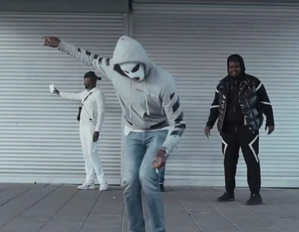
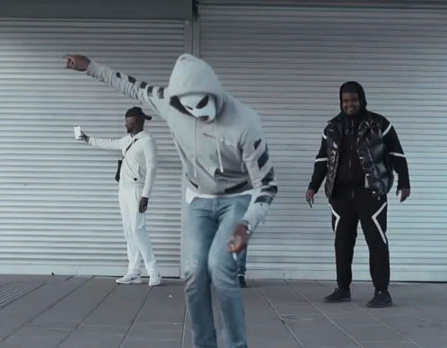
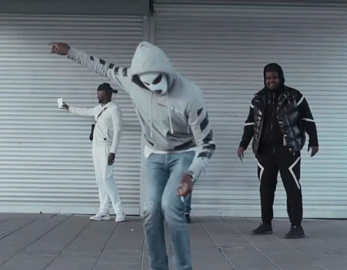

Vad är det här för livsstil? Get smoked som i Sisi
De gillar mig i Mitt i men hatar i Expressen
Inget som var viktigt, förtalar mig i pressen
Pull up med en sticky, får dem att hålla käften
Gå och fråga Blizzy, jag hatar att va känd
Här vänder det som sticky-icky, min vän
Andree, han är Pippi, han klarar ju sig själv
Jag har aldrig varit fittig men du kan tagga hem
Om du bara visste, du skulle vara tyst, ey
Om du bara visste, du skulle vara kyssk
Hon sög mig nyss på dicken, sen gav hon dig en kyss
Ey, akhi, dubbelfilter, han mecka på en kush
Ey, jag vill inte ha en gun i min hand
Om jag måste, dubbla maggen, åker snabbt fram
Öga för öga, tand för tand
Livet i ghettot är knas, det är sant Det är jag och min broder, vi måste hålla band Så jag sa till min moder "Jag måste va en man" Må Gud va med oss, inte sheytan Och jag fruktar han som ser oss, ingen annan Ey, lämna mig ifred, det min heder är helig Och min broder med en shurda här på min spelning Allt jag har, klart jag delish Rätt är rätt och fel är felishVad är det här för livsstil? Get smoked som i Sisi
De gillar mig i Mitt i men hatar i Expressen
Inget som var viktigt, förtalar mig i pressen
Pull up med en sticky, får dem att hålla käften
Gå och fråga Blizzy, jag hatar att va känd
Här vänder det som sticky-icky, min vän
Andree, han är Pippi, han klarar ju sig själv
Jag har aldrig varit fittig men du kan tagga hem
Vila i frid, alla bröder omkommer
Fullfruserade, handen på kolven
Alla leker nåt tills döden kommer
Själar har fallit för många i betongen
Om det finns risk, jag förlorar mina para
Meckar på en kvist innan planen, sayonara
Loggar inte ut förrän alla vi är klara
100 gubbar med mig, bränner alla hala
Och alla här har fastnat som amfetamin
Och aina bara letar, de vill sätta dit
Startar plantera, ljuger med bevisning
Låt oss bara leva, lämna mitt liv
Bästa betyg, hata min hud
Louis V-tyg varje dag nu
Link up i Rud, shoutout Hjällbo, 16-4, 164
Vad är det här för livsstil? Get smoked som i Sisi
De gillar mig i Mitt i men hatar i Expressen
Inget som var viktigt, förtalar mig i pressen
Pull up med en sticky, får dem att hålla käften
Gå och fråga Blizzy, jag hatar att va känd
Här vänder det som sticky-icky, min vän
Andree, han är Pippi, han klarar ju sig själv
Jag har aldrig varit fittig men du kan tagga hem
